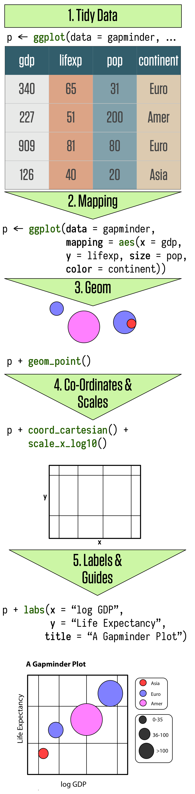

Porque investir em boas visualizações ?
Enquanto acadêmicos, uma das habilidades mais importantes que você precisa adquirir é a capacidade de comunicar de forma efetiva seus resultados, sejam esses simples dados exploratórios, até modelos estatísticos rebuscados. A meu ver, mma visualização efetiva e bem pensada é sempre mais atraente do que uma tabela. O público em geral, incluindo nossos colegas acadêmicos, não saberão onde olhar e como analisar uma tabela cheia de números, enquanto um bom gráfico pode ser bastante intuitivo de seguir.
Nosso itinerário.
Para aprendar sobre visualização de dados, vamos percorrer os seguintes passos.
Preparaçao de Dados: Porquê preciso dos meus dados Tidy?
Introdução ao ggplot: Geoms and Aesthetics
Acessários dos gráficos: labels, escalas, títulos, e outros.
Casos Aplicados: reproduzindo gráficos de artigos acadêmicos.
Preparação dos Dados: Porquê preciso dos meus dados Tidy?
Ter seus dados em formato tidy é fundamental para o uso do ggplot. 80% do trabalho de visualização de dados está em preparar seus dados, os outros 20% é pensar quais dados utilizar e como botar em código.
Nós aprendemos semana passsada, porém a guisa de revisão. As três propriedades mais importantes que definem um banco de dados tidy são:
Vamos ver estas regras visualmente:

E porque é importante ter nossos dados em formato tidy quando pensamos em visualização? O ggplot funciona conectando colunas com visuais. E para fazer isto, precisamos de que cada coluna seja uma variável – exatament como dados tidy são organizados.
Introducao ao ggplot.
Visualização de dados envolve conectar (mapear) variáveis em seu banco de dados a representações gráficas. O ggplot fornece uma linguagem unificada para este processo de variáveis -> gráfico. Há outras formas e outros pacotes de visualização em R. O ggplot é uma destas linguagens.
Grammar of Graphics.
O ggplot é baseado na Grammar of Graphics. A grammar of graphics é uma linguagem desenvolvida para criar e descrever de forma unificada visualizações gráficas. Esta linaguem funciona com duas regras fundamentais:
Segue abaixo uma visualização gráfica da Grammar of Graphics.. Discutiremos ao longo destas aulas cada uma das camadas de funcionamento da Grammar of Graphics.

ggplot: intuição.
O ggplot implementa o framework do Grammar of Graphics em R. Como esperado, Cada gráfico é construído camada por camada:
- Começando com seus dados,
- Mapeamento Dados -> Visuais (aes),
- Decisões geométricas (geoms) e,
- Embelezamento do gráfico (scale, theme e labels).
E sua lógica fundamental funciona conectando variáveis a representações gráficas por meio de uma função chamada aesthethics mapping (aes).
O gráfico abaixo de Kieran Healy resume bem a lógica:

ggplot: na prática.
Quatro “grande” etapas definem nosso trabalho de visualização:
Etapa dos Dados: Define qual banco de dados você pretende visualizar
Etapa de Mapear: Define quais variáveis -> representações gráficas você pretende visualizar.
Etapa de Geom: Define como você pretende visualizar.
Etapa de Embelezamento: Labels, escalas, coordenados, temas….
Exemplo Básico.
Vamos ver um exemplo básico de como funciona o ggplot utilizando o banco de dados gapminder.
Em abstrato

Geoms: Como queremos visualizar nossos dados?
As geom_function controlam o tipo de gráfico que pretendemos visualizar. Por exemplo, gráficos de dispersão, barras, mapas, linhas, boxplots, densidade, cada tipo de gráfico representa uma geom_function() diferente. Vamos ver diversos exemplos a seguir.
Tipos de Gráfico: Uma variável.

Todos estes gráficos necessitam desomente uma variável como input (no eixo x). Os valores do eixo y são calculados diretamente pelo ggplot, de acordo com o gráfico do seu interesse. Vamos ver alguns exemplos.
geom_density
Vamos gerar um gráfico simples de densidade. Vamos plotar a densidade dos valores de expectativa de vida usando os dados do gapminder.
ggplot(data=gapminder, # dados
mapping=aes(x=lifeExp)) + # mapear
geom_density() # forma geométrica

Customizar o gráfico usando as representações gráficas fill e alpha.
ggplot(data=gapminder, # dados
mapping=aes(x=lifeExp)) + # mapear
geom_density(alpha=.5, fill="tomato2") # forma geométrica

geom_histogram
Semelhante à densidade, porém, com histograms, os valores do eixo x são agrupados em intervalos (bins), e os valores do y são a soma de casos nestes intervalos.
ggplot(data=gapminder, # dados
mapping=aes(x=lifeExp)) + # mapear
geom_histogram() # forma geométrica

Mais algumas customizações, utilizando as representações gráficas color e fill e ajudstando a largura dos intervalos em x.
ggplot(data=gapminder, # dados
mapping=aes(x=lifeExp)) + # mapear
geom_histogram(bins=50, color="black",
fill="lightgreen") # forma geométrica

geom_bar (variável discreta)
geom_bar funciona da mesma forma que geom_hist, porém a variável x é categórica (discreta). Dessa forma, o y será a soma de observações em cada grupo presente em x.
ggplot(data=gapminder, # dados
mapping=aes(x=continent)) + # mapear
geom_bar()

Perceba, o eixo y é a soma de cada continente. Internamente, o ggplot usa o group_by() + summarize() para somar as observações em cada grupo. Isto é diferente de plotar dados já agrupados. Para isto, precisamos alterar o input de geom_bar. Por exemplo:
g_grouped <- gapminder %>%
count(continent)
ggplot(data=g_grouped, # dados
# adiciona o y
mapping=aes(x=continent, y=n)) + # mapear
# adiciona identity
geom_bar(stat="identity")

Tipos de Gráfico: Contínua x Contínua.

geom_point
Quando trabalhamos com duas variáveis contínuas, o uso de gráfico de dispersão (com pontos) é em geral a escolha mais intuitiva. Como esperado, este tipo de gráfico necessita de no mínimo duas variáveis (xe y), e ambas precisam ser contínuas. Vejamos um exemplo.
ggplot(data=gapminder, ## Etapa dos Dados
aes(y=lifeExp, x=gdpPercap)) + # Etapa de Mapear
geom_point() # Etapa do Geom

Vamos alterar outras representações gráficas: shape altera a formato dos pontos e size controla o tamanho dos pontos.
ggplot(data=gapminder, ## Etapa dos Dados
aes(y=lifeExp, x=gdpPercap)) + # Etapa de Mapear
geom_point(shape=22, alpha=.5,
fill="tomato2",
color="black",
size=2) # Etapa do Geom

geom_smooth
O geom_smooth adiciona uma curva para descrever de forma intuitiva o padrão de associação dos seus dados.
ggplot(data=gapminder, ## Etapa dos Dados
aes(y=lifeExp, x=gdpPercap)) + # Etapa de Mapear
geom_smooth(fill="steelblue",
color="black",
size=1, alpha=.3) # Etapa do Geom

Múltiplos geoms.
O gŕafico acima é pouco intuitivo sem a inclusão dos pontos em si. Lembre-se que o ggplot funciona em camadas, portanto, podemos facilmente combinar múltiplas formas geométricas em um único gráfico. Somente precisamos incluir todos os dados e variáveis nas nossas representações gráficas.
ggplot(data=gapminder, ## Etapa dos Dados
aes(y=lifeExp, x=gdpPercap)) + # Etapa de Mapear
# Pontos
geom_point(shape=22, alpha=.2,
fill="tomato2",
color="black",
size=2) + # Etapa do Geom
# Tendência
geom_smooth(fill="tomato2",
color="black",
size=1, alpha=.6) # Etapa do Geom

Tipos de Gráfico: Discreta x Contínua.

geom_boxplot
O geom_boxplot combina variáveis de tipo distintos. Utilizamos esta forma geométrica quando pretendemos apresentar um valor contínuo dividiso por outros valores categórico (grupos). O boxplot agrega esta variável contínua e apresenta de forma intuitiva sua dispersão e medida central de cada grupo (mediana).
ggplot(data=gapminder, ## Etapa dos Dados
aes(y=lifeExp, x=continent)) + # Etapa de Mapear
# Pontos
geom_boxplot(fill="tomato2",
color="black",
size=1.5,
alpha=.5) # Etapa do Geom

Representações Gráficas (aes)
Até aqui, usamos basicamente duas representações gráficas dentro das nossa função de mapear (aes): os eixos x e y. Intuitivamente, costumamos pensar nos eixos x e y como as únicas variáveis no banco de dados e consideramos outros elementos dos gráficos – cores, transparência, formato – como acessórios.
Esta não é a forma como o ggplot funciona.
Todas as representações gráficas – color, fill, shape, alpha, linetype, etc… – podem ser mapeadas a variáveis do seu banco de dados. Este processo funciona adicionando mais elementos dentro da nossa função de mapear (aes).
Quais Representações gráficas (aes) estão disponíveis?

As principais representações gráficas são as seis acima apresentadas.
Cada uma destas representações combinará melhor com gráficos distintos, e com objetivos distintos da sua análise.
Todas as variáveis que você pretende visualizar do seu banco de dados precisar ser mapeada em seu objeto do ggplot. Este mapeamento se dá a partir da função aes(). As suas representações gráficas não definem como você mostrará seus dados, mas somente o que você pretende mostrar e usando qual representação gráfica.
Vamos ver alguns exemplos de como mapear variáveis -> representações gráficas.
Color: Para Colorir Dados Agrupados.
ggplot(data=gapminder, ## Etapa dos Dados
aes(y=lifeExp, x=gdpPercap, # Etapa de Mapear
color=continent)) + # Com fill
geom_point() # Etapa do Geom

Fill: Para Preencher Dados Agrupados.
ggplot(data=gapminder, # dados
mapping=aes(x=lifeExp, fill=continent)) + # mapear
geom_density(alpha=.5) # forma geométrica

gap_grouped <- gapminder %>%
group_by(year, continent) %>%
summarise(m=mean(lifeExp, na.rm = TRUE))
ggplot(data=gap_grouped, # dados
mapping=aes(x=year, y=m,
fill=continent)) + # mapear
geom_bar(stat="identity", position="dodge")

Alpha e size: Para mostrar variação em valores.
ggplot(data=gapminder, ## Etapa dos Dados
aes(y=lifeExp, x=gdpPercap)) + # Etapa mapear
geom_point(aes(alpha=pop,
size=log(pop))) + # addicionar representações gráficas
geom_smooth(color="red") + # Etapa do Geom
scale_x_log10()

Shape
gap_grouped <- gapminder %>%
group_by(year, continent) %>%
summarise(m=mean(lifeExp, na.rm = TRUE))
ggplot(data=gap_grouped, ## Etapa dos Dados
aes(y=m, x=year,
shape=continent)) + # Etapa mapear
geom_point(size=3) +
geom_line()

Desafio:
Descreva o gráfico abaixo usando o que aprendemos do ggplot e grammar of graphics.